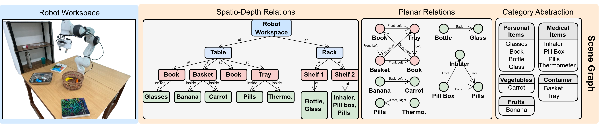

Abstract

For generating viable multi-step plans in robotics, it is necessary to have a representation scheme for scenes that is both open-set and structured in a way that facilitates local updates when the scene changes. We propose a method for generating open-world multi-perspective scene graphs using foundation models, which can support downstream planning tasks. We demonstrate that our method yields superior re- sults compared to previous works in both open-world object detection and relation extraction, even without any priors. Moreover, we illustrate how the multi-perspective nature of the scene graph aids the planner in devising feasible plans for tasks necessitating reasoning over the spatial arrangements and object category abstractions.